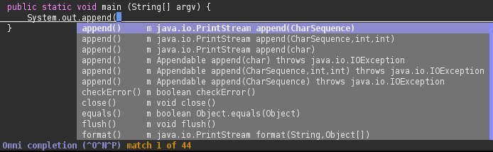

Why to use Java
This is a list of arguments why to use Java.
-
JVM
The Java Virtual Machine as distributed by Sun Microsystems is a mature piece of software. It can optimise code on the fly based on runtime performance. On loading a class, the HotSpot VM statically binds methods that do not require the virtual call mechanism. When it notices a function is called a lot from a certain location, it inlines that function in that location. This mechanism allows a Java server to become faster over time, even if its initial performance was not so great. This also means that it is a good idea to leave your Eclipse platform on forever, because it becomes more and more usable.
-
Large class library
The Java class library consists of a huge amount of heavily documented code. It contains I/O, networking, GUI, XML processing, cryptography, databases, logging facilities and much more. The graphics library allows for almost platform-independent GUI development.
-
Pretty much platform-independent
The nature of byte-code compiled languages is that they are portable to any platform you can write an interpreter on. Not all components of Java are equally portable and the bytecode may not be equally fast on all platforms, but in theory, the same piece of binary code can be used on any platform.
-
Simple bytecode
The Java bytecode is so simple that even hardware microprocessors are capable of natively executing it. There used to be Motorola microchips in cell phones that could execute Java bytecode natively. This meant that you could write a Java application on your desktop computer and execute it directly on the CPU of your cell phone.
-
Fast compiler
Compared to C++, Java compiles very fast, because there is little optimisation required at compile time. All heavy optimisation is delayed until runtime. The fast compiler leads to short development cycles.
-
Industry uses it a lot
Java is the de-facto standard for server-side web programming together with PHP. Learning Java will give you more chance getting a job. Another effect of industrial use is that it has many users and therefore a high absolute number of skilled programmers.
-
Garbage collection
Garbage collection makes memory management easier. You do not need to make sure memory you use is freed when no longer used. The garbage collector takes care of that.
-
Third party software
Due to Java's high position in the most used languages list (it currently has about 20% market share), many people decide to write their software in it. The Apache Foundation has a large amount of open source code written in Java.
-
Good IDEs due to reflection
Java, being a reflective language, offers language support for writing excellent Integrated Development Environments such as Eclipse. Even implementing code completion in editors such as VIM becomes nearly trivial using the reflective features of the language:
 -
Good support for concurrency
Java has native support for threading. This support is either missing or insufficiently mature in most other languages. Due to the the Java locking system, it can perform very fast locking and unlocking of threadlocks. This is achieved by not using mutices for everything. On Linux, Java uses the futex(2) system call, which provides fast userspace locking.
-
High abstraction
It is easy to create a high level of abstraction through the use of interfaces and subclasses. For example, you can expect a List<T> in a method and let the user decide whether they want to give you an ArrayList, a Vector or a LinkedList.
-
Type-safety
Java is type-safe, which means it can catch many aliasing errors at compile-time.
-
Real module system
As opposed to C++, Java has a real module system, making header files obsolete.